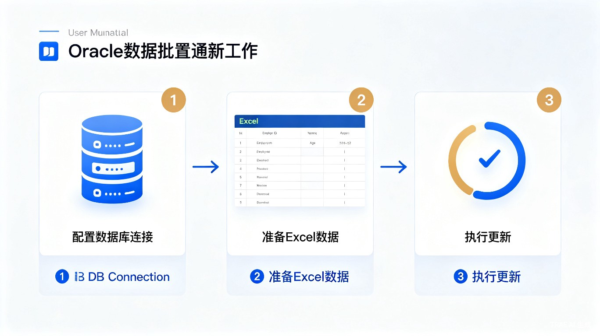
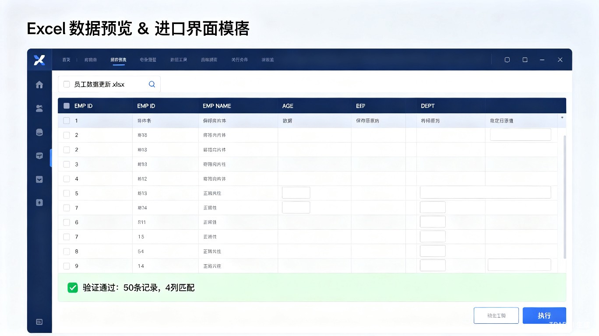

切换到「数据库连接」标签页
点击「+ 添加连接」按钮
| 字段 | 说明 | 示例 |
|---|---|---|
| 连接名称 | 给连接起个名字 | 开发环境 |
| 主机地址 | 数据库服务器 IP 地址 | 192.168.1.100 |
| 端口 | Oracle 监听端口 | 1521 |
| 服务名 | Oracle 服务名 | ORCL |
| 用户名 | 数据库账号 | scott |
| 密码 | 数据库密码 | ******** |
点击「测试连接」验证配置
点击「保存」保存配置
host:port/service_name
示例：192.168.1.100:1521/ORCL使用提供的模板：Oracle数据批量修改工具_导入模板.xlsx
保存 Excel 文件
Excel 数据示例：
| EMP_ID | EMP_NAME | AGE | DEPT | 说明 |
|---|---|---|---|---|
| 1001 | 张三 | （空） | 技术部 | AGE 为空，保留原值 |
| 1002 | 李四 | 30 | （空） | DEPT 为空，保留原值 |
| 1003 | 王五 | 28 | 财务部 | 全部填写，全部更新 |

切换到「当前配置」标签页
选择 Excel 文件
点击「👁 预览」查看数据
点击「🔍 验证数据」检查 Excel 和数据库
验证通过后点击「✅ 执行」开始更新
在二次确认对话框中确认操作
等待更新完成，查看结果